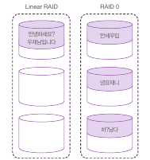
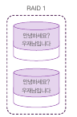
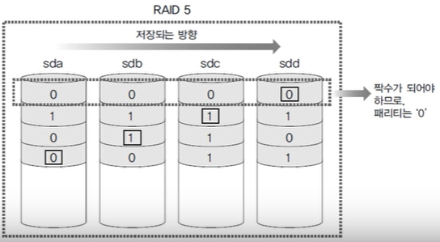
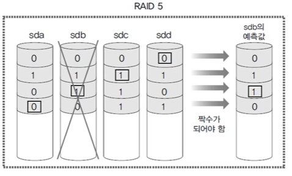

RAID와 LVM
RAID
RAID(Redundant Array of Inexpensive/Independent Disks)는 여러 디스크를 하나로 묶어 하나의 논리적 디스크로 작동하게 하는 것이다.
RAID에는 하드웨어 방식과 소프트웨어 방식이 있는데 하드웨어 방식은 고비용, 고성능, 안정적이라는 특징을, 소프트웨어 방식은 저비용, 비교적 저성능 등의 특징을 가지고 있다.
RAID 레벨
RAID는 구성 방식에 따라서 성능, 용량이 바뀌게 된다.
- Linear RAID와 RAID 0

Linear RAID 방식은 2개 이상의 하드 디스크를 1개의 볼륨으로 사용하고, 앞 디스크의 저장공간이 꽉 차게 되면 다음 저장 공간에 데이터를 저장하는 방식이다. 따라서 앞 디스크의 저장 공간이 남아 있다면 다음 저장 공간은 사용되지 않는다.
Linear는 순차적으로 저장하는 방식이기 때문에 각 하드디스크의 용량이 달라도 각 디스크 용량의 총 합만큼 저장 공간을 활용할 수 있다는 장점이 있다.(공간 효율성 100%) 단점은 병렬형 저장방식보다 속도 측면에서 느리다는 단점이 있다.
Linear 방식과 다르게 RAID 0 방식은 복수의 하드 디스크에 동시에 저장되며, 이를 스트라이핑방식이라고 한다.
동시에 저장하는 병렬형 저장방식이기 때문에 속도 측면에서 가장 우월한 장점을 가지고 있으나, 그만큼 데이터의 위험성도 높다. 또한 데이터를 나눠 보관하기 때문에 각 디스크가 용량에 있어서 차이가 클 수록 공간 활용도는 떨어질 수 있다.
- RAID 1

RAID1 방식은 미러링을 이용한 방식으로서, 데이터 저장시 복수의 하드디스크에 동일하게 저장한다. 공간 효율은 50%밖에 나오지 않는다는 단점이 있지만, 한 쪽이 고장나도 다른 한 쪽에 같은 데이터가 있기 때문에 데이터 안정성이 높다는 장점이 있다. 높은 비용을 감수하고서라도 중요한 데이터를 저장할 필요가 있을 때 사용한다.(결함 허용)
- RAID 5
RAID 5는 위의 RAID 0과 RAID 1의 장점을 취하기 위한 방법으로서, 방식상 최소한 3개 이상의 하드디스크가 있어야 구성할 수 있다.
이 방식은 패리티를 이용하기 때문에 디스크에 문제가 생겨도 비트를 유추하여 데이터를 복구할 수 있다.(결함 허용)
 000 111 010 011이라는 12bit 데이터를 4개의 디스크에 저장해야 한다고 했을 때, 데이터를 병렬저장하되 4개의 디스크 중 한 디스크는 패리티 데이터를 저장하기 위한 공간으로 사용한다. 짝수 패리티의 경우 각 행이 짝수가 되도록 패리티 데이터를 저장하고, 만약 한 디스크가 고장났을 시 패리티 데이터를 참고하여 상실된 데이터를 유추할 수 있게 된다.

이러한 방식이기 때문에 데이터의 결함에도 어느 정도 대응이 가능하고 디스크가 N개일 경우 N-1 만큼의 공간을 사용할 수 있어 공간 효율이 높다. 다만 디스크가 두 개 이상 고장이 날 경우 데이터는 복구할 수 없게 된다.
- RAID 6
RAID 6은 RAID 5의 문제점을 개선하기 위해 2개의 패리티를 사용한 방식이다. 최소 4개의 디스크가 필요하다. 비교적 공간 효율이 낮지만 데이터 신뢰도를 확보할 수 있는 방식이다.
- RAID 0+1 / RAID 1+0
1+0은 미러링 후 스트라이핑, 0+1은 스트라이핑 후 미러링 하는 방식이다. 안정성과 비용 측면에서 10이 더 우월하다
### RAID 구축하기
디스크 및 파티션 설정 과정은 생략한다. 다만, 파티션 설정시 type을 fd로 설정해야 한다.(Command : t, Hex code : fd)
- Linear RAID
(1) RAID 장치 생성
1
2
3
4
5
6
7
$ fdisk -l /dev/sdb; fdisk -l /dev/sdc #디스크 선처리 작업 완료 여부 확인
$ mdadm --create /dev/md9 --level=linear --raid-devices=2 /dev/sdb1 /dev/sdc1 #RAID 생성
# 다른 방식의 경우 0 : raid0, 1 : raid1 ...
# 1+0의 경우 : raid1 장치를 각각 생성 후(level=1) 두 raid 장치를 --raid-devices 옵션으로 지정한다(level=0).
$ mdadm --detail --scan #RAID 확인
mdadm 명령
- --create /dev/md9 : md9 장치에 RAID 생성. md9는 사용자가 임의로 설정. linear는 식별할 수 있는 번호 없기에 비어있는 9로 지정
- --level=linear : Linear RAID로 지정. 0은 RAID 0, 1은 RAID 1
- --raid-devices=2 /dev/sdb1, /dev/sdc1 : 2개의 하드 디스크 사용하며, 뒤에는 공백을 구분자로 하여 장치 이름을 지정한다.
- --stop /dev/md9 : RAID 장치 /dev/md9 작동 중지
- --run /dev/md9 : 중지된 장치 가동
- --detail /dev/md9 : 장치 상세 내용 출력
(2) 장치의 파일 시스템 생성
1
$ mkfs -t ext4 /dev/md9
(3) 디렉터리 마운트
1
2
3
4
5
6
7
$ mkdir /raidLinear #디렉터리 생성
$ mount /dev/md9 /raidLinear #마운트
$ df #결과 확인
$ mdadm --detail /dev/md9 #상세 내용 확인
(+) 부팅시 자동으로 마운트 되도록 fstab 파일 설정
1
2
3
4
$ vi /etc/fstab
#아래 내용 append
/dev/md9 /raidLinear ext4 defaults 0 0
LVM(Logical Volumn Manager)
LVM은 주로 여러 하드디스크를 합쳐 하나의 파티션으로 구성한 뒤 다시 필요에 따라 나눌 때 사용한다. 즉, 하드디스크 파티션들을 하나의 볼륨 그룹으로 합치고 이 볼륨 그룹을 다시 적절한 용량으로 필요에 따라 논리 볼륨으로 나눈다.
1
2
3
4
5
6
7
8
9
10
11
12
13
14
15
16
17
18
19
20
21
22
23
24
25
26
27
28
29
30
31
32
33
34
35
36
37
38
39
40
# 1. 파티셔닝
$ fdisk /dev/sdb
> Command : n
> Select : p
> Partition number(1-4) : 1
> First sector :
> Last sector :
> Command : t
> Hex Code : 8e
> Command : w
#2. 물리 볼륨 생성
$ pvcreate /dev/sdb1
$ pvcreate /dev/sdc1
#3. 볼륨 그룹 생성
$ vgcreate myVG /dev/sdb1 /dev/sdc1
#4. 볼륨 그룹 확인
$ vgdisplay
#5. 볼륨 그룹의 파티션 생성(논리 볼륨 생성)
$ lvcreate --size 1G --name myLG1 myVG
$ lvcreate --size 3G --name myLG2 myVG
$ lvcreate --extents 100%FREE --name myLG3 myVG
#6. 파일 시스템 생성
$ mkfs.ext4 /dev/myVG/myLG1
$ mkfs.ext4 /dev/myVG/myLG2
$ mkfs.ext4 /dev/myVG/myLG3
#7. 디렉터리 생성 및 마운트
$ mkdir /lvm1
$ mkdir /lvm2
$ mkdir /lvm3
$ mount /dev/myVG/myLG1 /lvm1
$ mount /dev/myVG/myLG2 /lvm2
$ mount /dev/myVG/myLG3 /lvm3